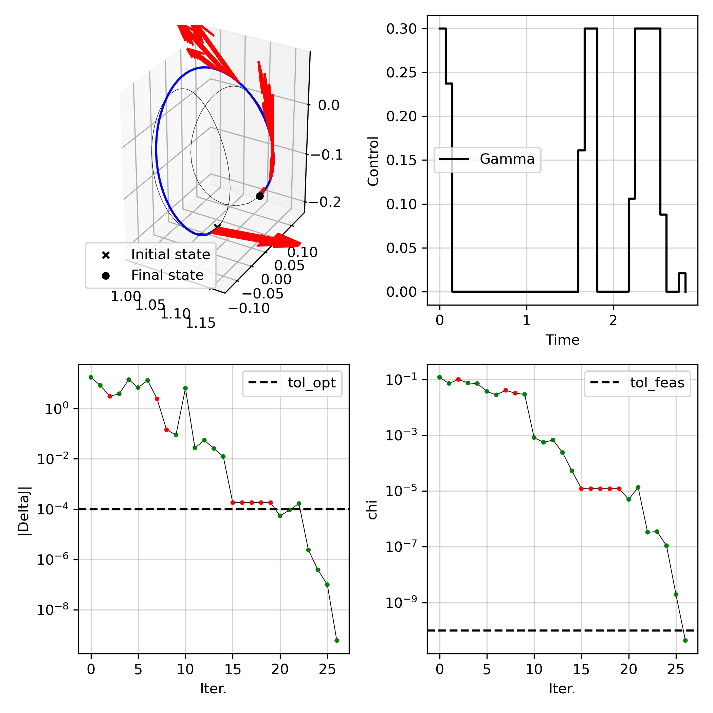

Tutorials#
Setting up the dynamics#
We first need to define the dynamics.
As an example, we will assume we want to solve a fixed-time, continuous control rendez-vous problem in the CR3BP.
We will define a scocp.ScipyIntegrator class. Note that instead, we could have constructed a scocp.HeyokaIntegrator class.
First, we need to construct two equations of motion: one to propagate the state, and another to propagate the state and state-transition matrices.
As a convention, the last parameter is expected to be the control vector u. If building a heyoka integrator, make sure the parameters hy.par[:] is the control vector u.
To define the first equations of motion for the state with control, control_rhs_cr3bp, let’s first define the natural dynamics rhs_cr3bp
def rhs_cr3bp(t, state, mu):
"""Equation of motion in CR3BP, formulated for scipy.integrate.solve=ivp(), compatible with njit
Args:
t (float): time
state (np.array): 1D array of Cartesian state, length 6
mu (float): CR3BP parameter
Returns:
(np.array): 1D array of derivative of Cartesian state
"""
# unpack positions
x = state[0]
y = state[1]
z = state[2]
# unpack velocities
vx = state[3]
vy = state[4]
vz = state[5]
# compute radii to each primary
r1 = np.sqrt((x + mu) ** 2 + y ** 2 + z ** 2)
r2 = np.sqrt((x - 1 + mu) ** 2 + y ** 2 + z ** 2)
# setup vector for dX/dt
deriv = np.zeros((6,))
# position derivatives
deriv[0] = vx
deriv[1] = vy
deriv[2] = vz
# velocity derivatives
deriv[3] = (
2 * vy + x - ((1 - mu) / r1 ** 3) * (mu + x) + (mu / r2 ** 3) * (1 - mu - x)
)
deriv[4] = -2 * vx + y - ((1 - mu) / r1 ** 3) * y - (mu / r2 ** 3) * y
deriv[5] = -((1 - mu) / r1 ** 3) * z - (mu / r2 ** 3) * z
return deriv
and now the controlled eom
def control_rhs_cr3bp(t, state, mu, u):
"""Equation of motion in CR3BP with continuous control in the rotating frame"""
# derivative of state
B = np.concatenate((np.zeros((3,3)), np.eye(3)))
deriv = rhs_cr3bp(t, state[0:6], mu) + B @ u[0:3]
return deriv
Now, let’s define the second equations of motion control_rhs_cr3bp_stm, which propagates both the state and the state-transition matrices
def control_rhs_cr3bp_stm(t, state, mu, u):
"""Equation of motion in CR3BP with continuous control in the rotating frame with STM"""
# derivative of state
B = np.concatenate((np.zeros((3,3)), np.eye(3)))
deriv = np.zeros(60) # 6 + 6*6 + 6*3
deriv[0:6] = rhs_cr3bp(t, state[0:6], mu) + B @ u[0:3]
# derivative of STM
Phi_A = state[6:42].reshape(6,6)
A = np.zeros((6,6))
A[0:3,3:6] = np.eye(3)
A[3,4] = 2
A[4,3] = -2
A[3:6,0:3] = gravity_gradient_cr3bp(state[0:3], mu)
deriv[6:42] = np.dot(A, Phi_A).reshape(36,)
# derivative of control sensitivity
Phi_B = state[42:60].reshape(6,3)
deriv[42:60] = (np.dot(A, Phi_B) + B).reshape(18,)
return deriv
Finally, we can construct an integrator
mu = 1.215058560962404e-02
integrator = scocp.ScipyIntegrator(
nx=6,
nu=3,
rhs=control_rhs_cr3bp, # equivalent to scocp.control_rhs_cr3bp,
rhs_stm=control_rhs_cr3bp_stm, # equivalent to scocp.control_rhs_cr3bp_stm,
impulsive=False,
args=(mu,[0.0,0.0,0.0]),
method='DOP853',
reltol=1e-12,
abstol=1e-12
)
Building my SCOCP#
Let’s define some constants for our problem
# propagate uncontrolled and controlled dynamics
x0 = np.array([
1.0809931218390707E+00,
0.0,
-2.0235953267405354E-01,
0.0,
-1.9895001215078018E-01,
0.0])
period_0 = 2.3538670417546639E+00
sol_lpo0 = integrator.solve([0, period_0], x0, get_ODESolution=True)
xf = np.array([
1.1648780946517576,
0.0,
-1.1145303634437023E-1,
0.0,
-2.0191923237095796E-1,
0.0])
period_f = 3.3031221822879884
sol_lpo1 = integrator.solve([0, period_f], xf, get_ODESolution=True)
# transfer problem discretization
N = 40
tf = (period_0 + period_f) / 2
times = np.linspace(0, tf, N)
umax = 0.3 # max acceleration
We now define a SCOCP instance, by inheriting scocp.ContinuousControlSCOCP.
Note the MySCOCP defined below is actually what’s implemented as scocp.FixedTimeContinuousRdv, but we will explicitly define it here and see what it takes to define our own SCOCP.
class MySCOCP(scocp.ContinuousControlSCOCP):
"""Fixed-time continuous rendezvous problem class"""
def __init__(self, x0, xf, umax, *args, **kwargs):
super().__init__(*args, **kwargs)
assert len(x0) == 6
assert len(xf) == 6
self.x0 = x0
self.xf = xf
self.umax = umax
return
def evaluate_objective(self, xs, us, gs, ys=None):
"""Evaluate the objective function"""
dts = np.diff(self.times)
return np.sum(gs.T @ dts)
def solve_convex_problem(self, xbar, ubar, vbar, ybar=None):
"""Solve the convex subproblem
Args:
xbar (np.array): `(N, self.integrator.nx)` array of reference state history
ubar (np.array): `(N-1, self.integrator.nu)` array of reference control history
vbar (np.array): `(N-1, self.integrator.nv)` array of reference constraint history
Returns:
(tuple): np.array values of xs, us, gs, xi_dyn, xi_eq, zeta_ineq
"""
N,nx = xbar.shape
_,nu = ubar.shape
Nseg = N - 1
xs = cp.Variable((N, nx), name='state')
us = cp.Variable((Nseg, nu), name='control')
vs = cp.Variable((Nseg, 1), name='Gamma')
xis_dyn = cp.Variable((Nseg,nx), name='xi_dyn') # slack for dynamics
penalty = get_augmented_lagrangian_penalty(self.weight, xis_dyn, self.lmb_dynamics)
dts = np.diff(self.times)
objective_func = cp.sum(vs.T @ dts) + penalty
constraints_objsoc = [cp.SOC(vs[i,0], us[i,:]) for i in range(N-1)]
if self.augment_Gamma:
constraints_dyn = [
xs[i+1,:] == self.Phi_A[i,:,:] @ xs[i,:] + self.Phi_B[i,:,:] @ np.concatenate([us[i,:], vs[i,:]]) + self.Phi_c[i,:] + xis_dyn[i,:]
for i in range(Nseg)
]
else:
constraints_dyn = [
xs[i+1,:] == self.Phi_A[i,:,:] @ xs[i,:] + self.Phi_B[i,:,:] @ us[i,:] + self.Phi_c[i,:] + xis_dyn[i,:]
for i in range(Nseg)
]
constraints_trustregion = [
xs[i,:] - xbar[i,:] <= self.trust_region_radius for i in range(N)
] + [
xs[i,:] - xbar[i,:] >= -self.trust_region_radius for i in range(N)
]
constraints_initial = [xs[0,:] == self.x0]
constraints_final = [xs[-1,0:3] == self.xf[0:3],
xs[-1,3:6] == self.xf[3:6]]
constraints_control = [
vs[i,0] <= self.umax for i in range(Nseg)
]
convex_problem = cp.Problem(
cp.Minimize(objective_func),
constraints_objsoc + constraints_dyn + constraints_trustregion + constraints_initial + constraints_final + constraints_control)
convex_problem.solve(solver = self.solver, verbose = self.verbose_solver)
self.cp_status = convex_problem.status
return xs.value, us.value, vs.value, None, xis_dyn.value, None, None
There are two methods that are defined (on top of the inherited methods from scocp.ContinuousControlSCOCP):
evaluate_objective: evaluate the objective function (without any penalty)solve_convex_problem: constructs and solves the convex subproblem and returns the optimized variable values. It is expected to return 7 np.array’s, corresponding to:xs.value:(N,nx)state historyus.value:(N-1,nu)control historyvs.value:(N,self.integrator.nv)control magnitude history (used to upper-bound control magnitudes)ys.value:(ny,)additional variables (we don’t have any here, so we returnNone)xis_dyn.value:(N-1,nx)slack variables for dynamics non-convex equality constraintsxis.value:(ng,)slack variables for other non-convex equality constraints (we don’t have any here, so we returnNone)zetas.value:(nh,)slack variables for other non-convex equality constraints (we don’t have any here, so we returnNone)
Note that by inheriting scocp.ContinuousControlSCOCP, we already have built-in a build_linear_model method which will populate the linearized matrices self.Phi_A, self.Phi_B, and self.Phi_c to define our linearized dynamics constraints!
Here, we assume we have no non-convex constraints besides the dynamics equality constraints, so we do not need to define an evaluate_nonlinear_constraints method.
Solving my SCOCP#
Let’s now go over solving the above problem. We first need to construct some initial guess
# create initial guess
sol_initial = integrator.solve([0, times[-1]], x0, t_eval=times, get_ODESolution=True)
sol_final = integrator.solve([0, times[-1]], xf, t_eval=times, get_ODESolution=True)
alphas = np.linspace(1,0,N)
xbar = (np.multiply(sol_initial.y, np.tile(alphas, (6,1))) + np.multiply(sol_final.y, np.tile(1-alphas, (6,1)))).T
xbar[0,:] = x0 # overwrite initial state
xbar[-1,:] = xf # overwrite final state
ubar = np.zeros((N-1,3))
Let’s see if we can solve our convex subproblem (this is not a necessary step, but just for sanity check!)
# solve subproblem
vbar = np.sum(ubar, axis=1).reshape(-1,1)
problem.solve_convex_problem(xbar, ubar, vbar)
assert problem.cp_status == "optimal"
Let’s now setup the SCvx* algorithm and solve the non-convex OCP
# setup algorithm & solve
tol_feas = 1e-10
tol_opt = 1e-4
algo = scocp.SCvxStar(problem, tol_opt=tol_opt, tol_feas=tol_feas, alpha2=1.5)
solution = algo.solve(
xbar,
ubar,
vbar,
maxiter = 100,
verbose = True
)
xopt, uopt, vopt, yopt, sols, summary_dict = solution.x, solution.u, solution.v, solution.y, solution.sols, solution.summary_dict
assert summary_dict["status"] == "Optimal"
assert summary_dict["chi"][-1] <= tol_feas
# evaluate nonlinear violations
geq_nl_opt, sols = problem.evaluate_nonlinear_dynamics(xopt, uopt, vopt, steps=5)
assert np.max(np.abs(geq_nl_opt)) <= tol_feas
| Iter | J0 | Delta J | Delta L | chi | rho | r | weight | step acpt. |
1 | 2.2739e-10 | 1.7489e+01 | 1.9742e+01 | 1.1932e-01 | 8.8587e-01 | 1.0000e-01 | 1.0000e+02 | yes |
2 | 2.4175e-11 | 8.3132e+00 | 1.0340e+01 | 7.2199e-02 | 8.0398e-01 | 1.5000e-01 | 2.0000e+02 | yes |
3 | 2.2398e-02 | -3.0761e+00 | 9.7306e+00 | 1.0033e-01 | -3.1612e-01 | 2.2500e-01 | 4.0000e+02 | no |
4 | 2.5404e-02 | 3.8731e+00 | 9.7072e+00 | 7.4989e-02 | 3.9899e-01 | 1.1250e-01 | 4.0000e+02 | yes |
5 | 1.9278e-01 | 1.4197e+01 | 2.6724e+01 | 7.1406e-02 | 5.3123e-01 | 1.1250e-01 | 8.0000e+02 | yes |
6 | 1.5384e-01 | 6.8193e+00 | 1.2567e+01 | 3.7230e-02 | 5.4262e-01 | 1.1250e-01 | 8.0000e+02 | yes |
7 | 2.2936e-01 | 1.3185e+01 | 1.3279e+01 | 2.7903e-02 | 9.9291e-01 | 1.1250e-01 | 1.6000e+03 | yes |
8 | 2.0723e-01 | -2.4345e+00 | 1.1287e-01 | 4.0832e-02 | -2.1569e+01 | 1.6875e-01 | 1.6000e+03 | no |
9 | 2.1206e-01 | -1.4361e-01 | 1.1082e-01 | 3.2106e-02 | -1.2959e+00 | 8.4375e-02 | 1.6000e+03 | no |
10 | 2.1950e-01 | 8.9891e-02 | 1.0612e-01 | 2.9201e-02 | 8.4708e-01 | 4.2188e-02 | 1.6000e+03 | yes |
| Iter | J0 | Delta J | Delta L | chi | rho | r | weight | step acpt. |
11 | 1.9400e-01 | 6.3894e+00 | 6.4175e+00 | 8.1784e-04 | 9.9562e-01 | 6.3281e-02 | 3.2000e+03 | yes |
12 | 1.9906e-01 | 2.7403e-02 | 5.8542e-02 | 5.5369e-04 | 4.6809e-01 | 9.4922e-02 | 6.4000e+03 | yes |
13 | 1.9658e-01 | 5.4702e-02 | 5.4863e-02 | 6.7060e-04 | 9.9708e-01 | 9.4922e-02 | 1.2800e+04 | yes |
14 | 1.9674e-01 | 2.5814e-02 | 2.9075e-02 | 2.3998e-04 | 8.8784e-01 | 1.4238e-01 | 2.5600e+04 | yes |
15 | 1.9677e-01 | 1.2429e-02 | 1.3145e-02 | 5.2697e-05 | 9.4554e-01 | 2.1357e-01 | 5.1200e+04 | yes |
16 | 1.9675e-01 | -1.8190e-04 | 3.5873e-04 | 1.2053e-05 | -5.0706e-01 | 3.2036e-01 | 1.0240e+05 | no |
17 | 1.9675e-01 | -1.8194e-04 | 3.5873e-04 | 1.2051e-05 | -5.0716e-01 | 1.6018e-01 | 1.0240e+05 | no |
18 | 1.9675e-01 | -1.8200e-04 | 3.5874e-04 | 1.2050e-05 | -5.0734e-01 | 8.0090e-02 | 1.0240e+05 | no |
19 | 1.9675e-01 | -1.8189e-04 | 3.5873e-04 | 1.2050e-05 | -5.0704e-01 | 4.0045e-02 | 1.0240e+05 | no |
20 | 1.9675e-01 | -1.8186e-04 | 3.5873e-04 | 1.2051e-05 | -5.0694e-01 | 2.0023e-02 | 1.0240e+05 | no |
| Iter | J0 | Delta J | Delta L | chi | rho | r | weight | step acpt. |
21 | 1.9676e-01 | 5.4032e-05 | 3.5172e-04 | 4.9687e-06 | 1.5362e-01 | 1.0011e-02 | 1.0240e+05 | yes |
22 | 1.9676e-01 | 9.2034e-05 | 9.7191e-05 | 1.3518e-05 | 9.4694e-01 | 5.0056e-03 | 2.0480e+05 | yes |
23 | 1.9675e-01 | 1.6716e-04 | 1.7028e-04 | 3.3025e-07 | 9.8173e-01 | 7.5085e-03 | 4.0960e+05 | yes |
24 | 1.9675e-01 | 2.3888e-06 | 2.7693e-06 | 3.4822e-07 | 8.6259e-01 | 1.1263e-02 | 8.1920e+05 | yes |
25 | 1.9675e-01 | 3.8691e-07 | 3.8721e-07 | 1.0924e-07 | 9.9922e-01 | 1.6894e-02 | 1.6384e+06 | yes |
26 | 1.9675e-01 | 9.9912e-08 | 9.9900e-08 | 1.9313e-09 | 1.0001e+00 | 2.5341e-02 | 3.2768e+06 | yes |
27 | 1.9675e-01 | -5.9994e-10 | -6.0173e-10 | 4.3375e-11 | 9.9703e-01 | 3.8012e-02 | 6.5536e+06 | yes |
SCvx* algorithm summary:
Status : Optimal
Objective value : 1.96745700e-01
Penalized objective improvement : -5.99943928e-10 (tol: 1.0000e-04)
Constraint violation : 4.33754005e-11 (tol: 1.0000e-10)
Total iterations : 27
SCvx* algorithm time : 3.3973 seconds
